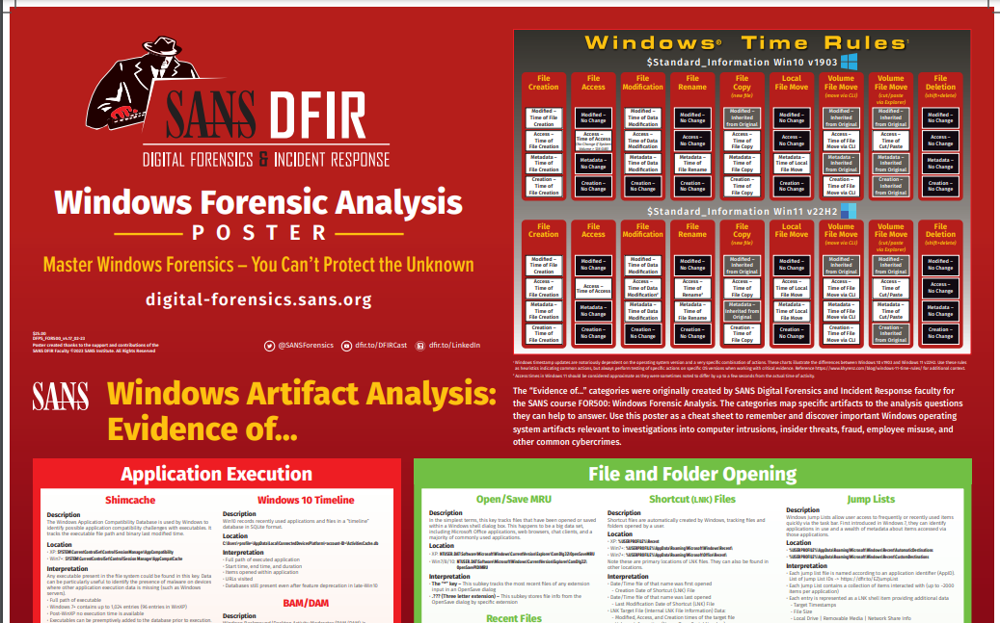
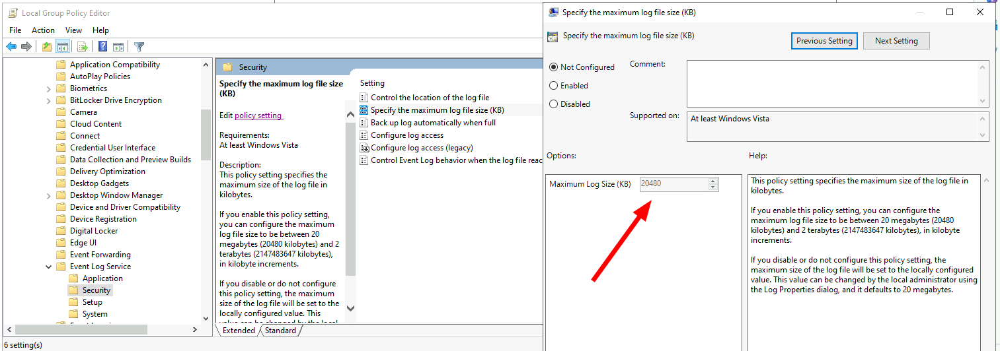
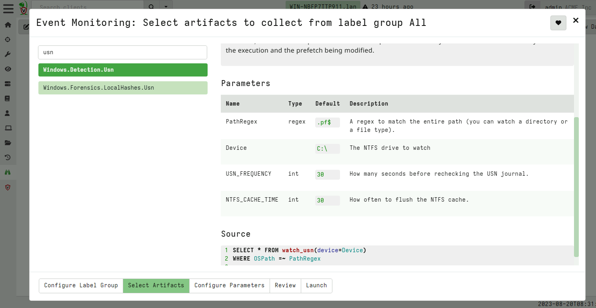

<!-- .slide: class="title" --> <h1 style="font-size: 4ex">Digital Forensics is dead! </h1> <div class="inset"> ## Long live Digital Forensics! ### Mike Cohen, Digital Paleontologist, Rapid7 </div>
<!-- .slide: class="content" --> ## A trip down memory lane... * What is Digital Forensics anyway? * Trying to reconstruct the past * What occurred on this system? * When did this occur? * Locard's exchange principal > "Every contact leaves a trace‚Äù --- <!-- .slide: class="full_screen_diagram" --> <a href="https://www.utica.edu/academic/institutes/ecii/publications/articles/A0AC5A7A-FB6C-325D-BF515A44FDEE7459.pdf">  </a> --- <!-- .slide: class="content" --> ## A hacking case... <a href="nat_060322internetarrest.pdf">  <a> --- <!-- .slide: class="content" --> ## A hacking case... <a href="nat_060322internetarrest.pdf">  <a> --- <!-- .slide: class="content" --> ## A hacking case... * A complex case consisting of * Manual investigation of multiple server drives. * Compromises over a couple of years * Images shipped from multiple countries. * Arrest made of 22yo University Student * Outcome was no conviction recorded * let off with a warning: motive was curiosity and desire to learn computer security. * Really good exercise for all involved! * Best practice evidence collection, chain of custody etc! --- <!-- .slide: class="content" --> ## Large scale operation! üö® <a href="MR30092004OpAuxin.pdf">  </a> --- <!-- .slide: class="content" --> ## How do you execute 400 search warrants simultaneously? * A large scale coordinated operation poses a lot of challenges! * We don't have hundreds of DF experts! üëÆ * We can not take images of absolutely everything (Even in 2004!) * We can not seize every device. üñ•Ô∏è üíªüìµ * 72 hours to determine relevance! * Need to have chain of custody and follow correct procedures! --- <!-- .slide: class="content" --> ## How do you execute 400 search warrants simultaneously? * Solution: Triage! * Created a custom bootable CD üìÄ * Knoppix! * Carve images from disk! * Present them in a page of thumbnails! * Distribute CD in advance * Use every available resource to triage! * No specialist DF skill required üßë‚Äçüíª * It is usually pretty obvious when a system requires proper escalation to DF experts üò± --- <!-- .slide: class="content" --> ## Key takeaways... * Digital Forensics is a rigorous science with strong evidentiary procedures! * However... We are trying to solve real life problems! * Need to be flexible and evolve to meet operational challenges * Scale, resourcing and time are critical challenges > Triage is a pragmatic tradeoff between time and accuracy --- <!-- .slide: class="content" --> ## This was 20 years ago! ### Could we do the same today? * Unlikely to be very effective! * Modern devices don't generally have DVD drives * Full Disk Encryption is widely available * Trusted boot, protected BIOS to prevent booting into DVD * Many devices are hardened (e.g. Chromebooks) * Modern drives are huge * Bad actors have better Op Sec * Much more awareness of DF techniques * Widely available encryption and security products
<!-- .slide: class="content" --> ## Is Digital Forensics Dead? * Constant tension between User Privacy vs. Digital Forensics! * Much of the time DF undermines device security. * Device manufacturers now focus on security and privacy as a first class feature. * For example: * Full disk encryption * Incognito browsers * VPN and TLS everywhere! --- <!-- .slide: class="full_screen_diagram" --> https://www.abc.net.au/news/2024-10-14/hannah-grundy-reveals-the-ultimate-betrayal-after-photos/104404784 <a href="https://www.abc.net.au/news/2024-10-14/hannah-grundy-reveals-the-ultimate-betrayal-after-photos/104404784"> <img src="Hannahs_case_1.png"> </a> --- <!-- .slide: class="full_screen_diagram" --> <a href="https://www.abc.net.au/news/2024-10-14/hannah-grundy-reveals-the-ultimate-betrayal-after-photos/104404784"> <img src="Hannahs_case_2.svg"> </a> --- <!-- .slide: class="content" --> ## Triage is useful! * Digital Forensics is about capturing the best available evidence * As long as general principals are followed it is useful! * What is appropriate for this evidence? --- <!-- .slide: class="content" --> ## Wider application of Digital Forensics * Digital Forensics started off as a Law Enforcement tool. * Valuable tool to "determine what happened" * Incident Response is a more modern application of DF techniques * Initially DF was used hoping for prosecution * Preserving evidence to evidentiary standards * Shipping drives via FedEx! * Thorough analysis and reporting by DFIR experts --- <!-- .slide: class="content" --> ## Priority of DFIR * As adversaries became more professional they became more efficient * Financially motivated! Can cause a lot of damage * Time to dwell is measured in days and hours * No time to take full disk images! * We need to rely more on triage! * Faster turn around - we need answers quickly! * Main goal is disruption and eviction of attackers.
<!-- .slide: class="content" --> ## Is Digital Forensics Good enough? * Many of the traditional Digital Forensics artifacts are not specifically designed for our needs. * For example: * Prefetch files * Evidence of execution * Jumplists * Evidence of user actions * USB device insertion * Various registry keys --- <!-- .slide: class="content" --> ## Other challenges * Use of TRIM in physical drives make slack analysis useless! * Operating systems are becoming hardened! * MacOS System Integrity Protections means we can not access some files. * Chromebooks anyone? * Ipads? --- <!-- .slide: class="content" --> ## Sometimes Digital Forensics is unsatisfying! * Much of the time we arrive at the "crime scene" after the fact * Try to reconstruct what happened from incidental information * Forensics by its nature is **Making the best of a bad hand!** --- <!-- .slide: class="title" --> <div style="height: 100px"></div> ## If we rely on Digital Forensics, we have already lost! ### Digital Forensics is reactive in nature * In a perfect world we would not need Digital Forensics! --- <!-- .slide: class="content" --> ## What if we could prepare for forensics? * Sometimes we go into an incident unprepared, but a lot of the time we can prepare in advance! * In a corporate setting we can actually prepare for forensic investigation and incident response * Similar but orthogonal to system hardening > Taking steps in advance to increase our chances of successfully > investigating an incident! --- <!-- .slide: class="content" --> ## Forensic Readiness 1. Maximizing an environment's ability to collect credible digital evidence 2. Minimizing the cost of forensics in an incident response. [Forensic Readiness John Tan @Stake (2001)](https://citeseerx.ist.psu.edu/viewdoc/download?doi=10.1.1.480.6094&rep=rep1&type=pdf) --- <!-- .slide: class="content" --> ## Levels of preparedness * Information security is a continuum and a tradeoff between resourcing and usability * What can we do to improve our forensic readiness? * Simple things can be done cheaply! * Set configuration parameters in the environment. * More sophisticated things may involve more efforts * Install an agent, EDR etc. * Consider how likely a forensic investigation will occur? * Tradeoff between cost and completeness * Table top exercises! --- <!-- .slide: class="content" --> ## What types of interventions can we employ? * Configuration change * Increases the system's ability to support forensic analysis * Installation of EDR/Agents/Endpoint visibility software * Increases resilience against malicious anti-forensics. --- <!-- .slide: class="content" --> ## Reimagine the forensic process * Let's re-examine the digital forensic process critically * Identify the things that can go wrong, the gaps and improvements * Can we increase our chances of success? * Passive target: No deliberate interference with the DFIR process * Active Adversary: Employing Anti-Forensics to frustrate investigation
<!-- .slide: class="content" --> ## DFIR Mind map <a href="https://www.sans.org/posters/windows-forensic-analysis/" > The SANS Windows Forensic Analysis Poster </a>  --- <!-- .slide: class="content" --> ## Event logs --- <!-- .slide: class="content" --> ## Event logs * Event logs are a huge source of forensic information! * But they have some problems: * Rotation of event logs. By default event log size is very small (20 mb) * We can adjust the maximum size of log files through group policy or the registry. --- <!-- .slide: class="content" --> ## Setting event log size  --- <!-- .slide: class="content" --> ## Clearing the event logs * Many attackers clear the event logs to frustrate forensic analysis. * Use Volume Shadow copies to periodically snapshot the disk * Forward events off the system, e.g. for SIEM or even built in Event Log forwarding. * Detect event log configuration modifications (Registry changes) --- <!-- .slide: class="content" --> ## Forwarding event logs off the system * The best practice for protecting event logs is to forward them off the system. * Built in facility within Windows: [Windows Event Forwarding (WEF)](https://learn.microsoft.com/en-us/windows/security/threat-protection/use-windows-event-forwarding-to-assist-in-intrusion-detection?source=recommendations) * Use agent like Elastic or Velociraptor * Tuning which events to forward * Sending only relevant events means less volume * Indexing events on the server side may increase costs (can just forward for backup). --- <!-- .slide: class="full_screen_diagram" --> ## Example: Forwarding Sysmon logs <img src="forwarding_sysmon.png" style="height: 400px;"> --- <!-- .slide: class="content" --> ## Disabling of event logs * Attackers can actively change logging configuration --- <!-- .slide: class="content" --> ## What can we do with an agent? * We can constantly check configuration for compliance  --- <!-- .slide: class="content" --> ## What can we do with an agent? * Real time alerting on configuration modifications 
<!-- .slide: class="content" --> ## File based forensic artifacts <div class="container"> <div class="col"> ## Prefetch files * Useful to determine evidence of execution * Only enabled on non-server Windows Versions. </div> <div class="col"> <img src="prefetch.png"> </div> --- <!-- .slide: class="content" --> ## Prefetch files Enable prefetcher on windows server OS's ```text reg add "HKEY_LOCAL_MACHINE\SYSTEM\CurrentControlSet\Control\Session Manager\Memory Management\PrefetchParameters" /v EnablePrefetcher /t REG_DWORD /d 3 /f reg add "HKEY_LOCAL_MACHINE\Software\Microsoft\Windows NT\CurrentVersion\Prefetcher" /v MaxPrefetchFiles /t REG_DWORD /d 8192 /f powershell /c "Enable-MMAgent -OperationAPI" ``` --- <!-- .slide: class="content" --> ## Filesystem artifacts: USN * The USN Journal records filesystem operations * Operations are recorded in the hidden NTFS file `$Extend\$UsnJrnl:$J` * The USN journal rolls over fairly quickly (Approx 30mb) --- <!-- .slide: class="content" --> ## Using the USN journal in IR Filtering the USN journal for prefetch file modifications gives useful timestamps related to program execution! <img src="usn_filter_for_pf.png" style="height: 300px;"> --- <!-- .slide: class="content" --> ## Querying the USN journal * The [fsutil tool](https://learn.microsoft.com/en-us/windows-server/administration/windows-commands/fsutil-usn) can be used to manipulate the USN journal. <div class="container"> <div class="col"> </div> <div class="col"> <img src="usn_increase.png"> </div> --- <!-- .slide: class="content" --> ## Attackers may clear the USN journal * Attacker can completely delete the USN Journal. * We are forced to carve the disk for USN records! --- <!-- .slide: class="content" --> ## What can we do with an agent? * Forward USN records off the system in a timely fashion.  --- <!-- .slide: class="content" --> ## Forwarding USN logs off the system
<!-- .slide: class="content" --> ## Conclusions * Digital Forensics is actually a rapidly evolving field! * Although rooted in "Best Practice" and "Court Admissibility" * Don't worry about being pragmatic. * Sometimes it is impossible to get the evidence in the traditional way. * We need to be creative to make use of the best evidence we have. * No gatekeeping ! Be inclusive ! --- <!-- .slide: class="content" --> ## Conclusions * Digital forensics is the best we have when preparation is insufficient! * We can do some simple and easy things to improve our forensic preparedness. * Challenge ourselves to preempt the forensic process * Table top exercises * Consider possible investigations * What forensic artifact is **best** to answer our questions?